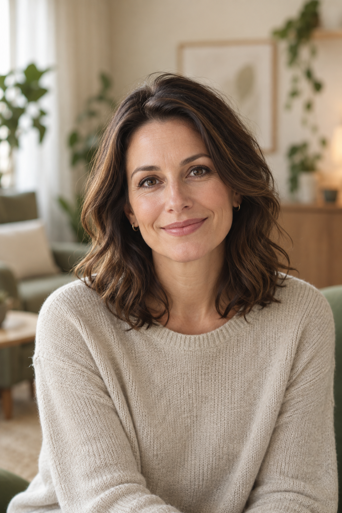

Dospelí
Pri emočných ťažkostiach, krízach, napätí, vyčerpaní alebo opakujúcich sa problémoch vo vzťahoch.
Psychologička · psychoterapeutka
mgr. Lucia Kováčová — certifikovaná psychologička a psychoterapeutka. Konzultácie a psychoterapia pre dospelých, mladých ľudí a rodičov.

O mne
Som psychologička a psychoterapeutka. Vo svojej práci vytváram bezpečný priestor pre dospelých, mladých ľudí aj rodičov.
Psychoterapia môže byť priestorom, kde sa dá bez hodnotenia zastaviť pri tom, čo je ťažké pomenovať alebo sa opakuje. Spoločne môžeme lepšie porozumieť emóciám, vzťahom a vlastným potrebám.
Mojou prioritou je rešpekt, dôvera a tempo, ktoré zodpovedá vašej situácii. Konkrétnu formu spolupráce vždy dohodneme individuálne.
Pre koho
Každé obdobie života prináša iné otázky. Spôsob spolupráce prispôsobujem človeku, jeho situácii a tomu, s čím prichádza.
Pri emočných ťažkostiach, krízach, napätí, vyčerpaní alebo opakujúcich sa problémoch vo vzťahoch.
Pri úzkosti, napätí, vzťahoch a výzvach, ktoré prináša dospievanie.
Pre rodičov, ktorí chcú lepšie rozumieť prežívaniu dieťaťa a vedome ho podporiť.
S čím môžete prísť
Niekedy je začiatkom iba pocit, že sa niektoré situácie, emócie alebo vzťahy opakujú a ťažko rozumiete tomu, prečo.
Ako pracujem
Je to priestor na porozumenie emóciám, vzťahom a opakujúcim sa vzorcom, ktoré nie sú vždy na prvý pohľad zrejmé.
Nejde o rýchle rady ani okamžité riešenia. V pravidelnom rozhovore sa dá postupne objavovať, čo stojí za ťažkosťami, a lepšie spoznávať vlastný vnútorný svet.
Bezpečný priestor na rozhovor o tom, čo je dôležité a náročné.
Pozorné vnímanie emócií, vzťahov a opakujúcich sa situácií.
Postupná práca tempom, ktoré rešpektuje individuálnu situáciu.
Výber zo skúseností
Venujem sa psychologickému poradenstvu, psychoterapii a podpore ľudí v rôznych životných situáciách.
Súkromná psychologická prax a poradenstvo.
odborná praxPriebežné vzdelávanie v psychológii, psychoterapii a práci s rodinami.
odborné vzdelávaniePodpora rodičov pri porozumení potrebám a prežívaniu dieťaťa.
rodičia a vývinPoradenstvo pri životných zmenách, vyčerpaní a starostlivosti o blízkych.
sociálna podporaIndividuálna podpora pre dospelých, mladých ľudí a rodiny.
pomoc ľuďomPriebežné vzdelávanie a odborná supervízia sú súčasťou zodpovednej praxe.
odborný rastPrvé stretnutie
Je to čas na rozhovor o tom, čo vás privádza, a na dohodu, aká forma ďalšej spolupráce by pre vás mohla byť vhodná.
Môžeme sa porozprávať
Ak premýšľate nad konzultáciou, ozvite sa e-mailom alebo telefonicky. Dohodneme si možnosti a termín prvého stretnutia.
Ak ste v bezprostrednom ohrození života alebo zdravia, volajte 112 alebo vyhľadajte najbližšiu urgentnú zdravotnú pomoc.